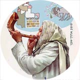

Видео о ШОФАРЕ / праздник РОШ а-ШАНА /
Согласно еврейской традиции шофар берет свое начало в испытании Авраама, о котором повествует Тора. Эта история называется АКИДА, что значит "связывание" (в христианской традиции она чаще называется "жертвоприношение Исаака").
Рош-а-Шана - праздник, в цен
ПОДБОРКА ВИДЕО ПО ТЕМЕ "ШОФАР"

Голос Шофара.Этот часовой фильм, созданный Эфраимом Калишем, рассматривает разные имена шофара, каждое из которых несет в себе совершенное действие. За каждым скрывается тайна и глубочайшее откровение.
Звуки шофара. Трепет и пророчество
Звуки шофара. ШВАРИМ - сокрушен сердцем
Звуки шофара. ТКИА - пронзая до глубины
 Жертвоприношение Исаака. Голос Шофара /AKIDA/
Жертвоприношение Исаака. Голос Шофара /AKIDA/
Согласно еврейской традиции шофар берет свое начало в испытании Авраама, о котором повествует Тора. Эта история, читаемая в синагогах на рош а-шана, называется АКИДА. От рога, принесенного в жертву барана ведет свою историю шофара, которым Всевышний повелел нам трубить в роды наши. Этот ролик - фрагмент полнометражного фильма "Голос Шоафара".
 Фрагмент саундтрека с торжественного собрания праздника Рош а-Шана (Праздник труб). Мессианская синагога "Возвращенные на Сион" 2009г. Древняя еврейская молитва из Пс. 62:2-3.
Фрагмент саундтрека с торжественного собрания праздника Рош а-Шана (Праздник труб). Мессианская синагога "Возвращенные на Сион" 2009г. Древняя еврейская молитва из Пс. 62:2-3.
Молитва и шофар Эд.Эфраим Калиш Голос Шофара. Синтзатор: Даниэль Круглов
 Шофар. Исайя 40:3
Шофар. Исайя 40:3
"Глас вопиющего в пустыне: приготовьте путь Господу, прямыми сделайте в степи стези Богу нашему". Этот призыв актуален по сей день. И сегодня шофар взывает к каждому из нас.
 СЛУШАЙ ИЗРАИЛЬ!
СЛУШАЙ ИЗРАИЛЬ!
СЛУШАЙ ИЗРАИЛЬ! - обращение Творца к Своему народу. Необходимость СЛУШАТЬ Бог подчеркивает неоднократно в Библии, быть внимательным ко всякому слову исходящему из Его уст.
Этот ролик - фрагмент полнометражного фильма "Голос Шоафара".
 Праздник воспоминания звука ШОФАРА
Праздник воспоминания звука ШОФАРА
Голос Шофара - звучит во всех городах и синагогах мира, где рассеяны евреи. Праздник Трубления Шофара (синод. - пр.Труб) - время трубить в шофар.
 Шофар + молитва на иврите + импровизации музыкантов
Шофар + молитва на иврите + импровизации музыкантов
Молитва на иврите, трубление импровизации на шофаре вместе с с музыкантами общины "Краеугольный Камень" г. Казань.
 Шофар - свидетель истории
Шофар - свидетель истории
Интересный док. фильм об истории и значении шофара.

Еврейская молитва, трубление шофара и музыкальная импровизация - это часть празднования на Рош-а-Шана в кругу друзей художников.
Концерт для ШОФАРа, тромбона и оркестра Меира Варшауэр
ПЛЕЙ ЛИСТЫ (списки видео по теме "Шофар")
ШОФАР | ПОКЛОНЕНИЕ ИЗРАИЛЯ ШОФАР | Исполнение заповеди трубления ШОФАР | Символика трубления